はじめに
この 執筆途中の 文書は、他のプログラミング言語の経験者のための、Tcl と snit の入門書です。想定する読者は
- 端末で bash や zsh などに触れた経験があり、
- OOP 言語の使用経験が有る
方々です。
現存する Tcl/Tk の学習書として最も有名な書籍は
Practical Programming in Tcl and Tk
（邦訳 Tcl・Tk入門）
です。本書も幾つかの例を参考にしています。ただ、前掲書で例として挙げられるコードには、
expr や if の式で {..} を使っていないことを始めとして、現代の Tcl/Tk では
（今でも動くものの）お勧めできない点が複数ありました。
これを解消することが、本書の最大の執筆動機です。
この文書の第一のテーマは、Tcl8.5 以降の、そこそこモダンな Tcl の書き方を
解説することです。Tcl は 8.5 で {*} 構文の導入という大きな拡張を行っており、
リストの構築や可変長引数の取り扱いが劇的に簡略化されました。
最新の Tcl 8.6 では更に機能が増えているのですが、まだ Tcl 8.5 が 使われている Distribution もある (ex. CentOS7) ため、本書は Tcl 8.5 で動くことを 基本にします。この前提があるので、 OOP のためのライブラリーには snit を用います。 (snit は Tcl のみで実装されており、かつ古い Tcl 用のバージョンも同梱されています) snit は Tcl の標準ライブラリー集合 tcllib に含まれています。
本書の第二のテーマは、他の言語の感覚で Tcl を書いた時にハマる落とし穴を知ることです。 陥りがちなエラーをエラーメッセージの実例と共に記載します。 Tcl の構文は、初見では他の言語に似て見えることもあります。しかし、他の言語の感覚で書くと 痛い失敗をすることがあります。そのような落とし穴を避けられる基礎体力を得ることも大きな目的です。
筆者について
XXX: TBW
参考リンクなど
XXX: TBW
なぜ今さらTcl?
私が Tcl をお勧めする理由は、Tcl がシェル系の言語の中では（書き方は大分冗長ですが）比較的堅牢なプログラムを書きやすいから、です。付録に bashとの比較 を挙げました。
とはいえ、Tcl で完全に bash(zsh) の置き換えることはお勧めしません。 Tcl の方が書き方が冗長であることや、端末上での REPL でのコマンド補完の仕組みが 劣っていることがその理由です。
もう少し詳しく
Tcl がメジャーな言語でないことは、現代の Tcl プログラマーにとって大前提です。 2020-06 の TIOBE index における 言語の人気トップ5 は C, Java, Python, C++, C# だそうです。JavaScript が 7位。 別の記事での トップ5 は Python, Java, JavaScript, C#, PHP.
では、一つのお仕事を成し遂げるにあたり、使う言語は一つで良いのでしょうか？
例えば Python や Java, C++ だけで一つの仕事に関わるプログラムを書き上げるのか？というと、
一番外側をシェル系の言語で書くものも見かけます。
例えば linux の firefox や google-chrome, libreoffice の本体は
ネィティブバイナリーですが、それらの起動コマンドが /bin/sh
で書かれていることはよく知られています。なぜこうするのでしょうか？
勿論、その最も大きな理由は、Linux の Distrubution 間の違いを吸収するためでしょう。
/bin/sh は POSIX 的に必ず使える処理系だからです。
ただ、本当にそれだけが理由でしょうか？
クロスプラットフォームな、より優れた言語である python 等の言語を
使わないのは、何故でしょうか？
私の解釈では、そういう仕事はシェル系の言語のほうが楽だから、 という理由もあるのではないかと思います。
複雑な仕事を担うソフトウェアシステムは、他のソフトウェア・要素との やり取りのために、大量の文字列定数を扱う必要があります。それらは すなわち、ファイル名やディレクトリ名、データベースへの接続文字列、 クラウドサービスのプロジェクト名やサービスアカウント名、APIキーなどです。
Python や Java などの普通の言語では、文字列定数は全て "..." のように
引用符で表記する必要があります。書くことが面倒という面もありますし、
ハードコーディングを避けたい、オプションとしてプログラムの外から
渡せるようにしたい、という欲求もあります。
それをどこから渡すか。一つには設定ファイルを使う方法があります。 ですが、yaml や ini などの設定ファイルは if や変数、ループは使えません。 プログラムが必要とする文字列定数が一定量を超すと、設定ファイル方式には限界が来ます。 そこでシェル系の言語が導入される、という事情があるように思います。
シェル系の場合、そのシェルのメタ文字でない文字列は、 引用符なしでそのまま表記することが可能です。 また、シェル系の言語はファイル名の操作と、外部プロセスのパイプラインを手短に書ける、 という強みもあります。
そういったシェル系言語として現代で最も使われるのは bash ですが、 初心者が bash で堅牢なプログラムを書くのは決して簡単なことではないように思います。 それに対し Tcl は例外処理の仕組みが整っているので、比較的初心者に優しい言語です。 Unit Test の仕組みも標準添付です。
それが、私が今さら Tcl をお勧めする理由です。
本書のサンプルの動作環境
同じ環境である必要はありませんが、別の環境の方は細部を自力で読み替えながら進んで下さい。
-
OS は Fedora Linux を用います(現時点では Fedora32)
sudo dnf install tcl tcl-doc tcl-html tcllib
-
Tcl の外側の、POSIXレベルの細かい移植性のための考察は省きます。お好きな人がどうぞ。
-
tclreadline が導入されて、
~/.tclshrcに設定されていることを前提としますが、 無くても多くの例題は実行可能でしょう。- Fedora/CentOS に tclreadline をインストール出来るよう、
copr を用意しました。以下のコマンドで導入可能です。
sudo dnf copr enable buribullet/tcltk-extras sudo dnf install tclreadline
- Fedora/CentOS に tclreadline をインストール出来るよう、
copr を用意しました。以下のコマンドで導入可能です。
-
Windows や Mac の方は ActiveTcl の wish を使って下さい。
Tcl の起動
本書では（Tcl の外側の）端末のシェルのプロンプトは % と記載します。
(これは zsh の標準プロンプトです)
本書の例を実行するには、端末から tclsh コマンドを実行して下さい。（バージョンは 8.5 以後なら大丈夫です）
% tclsh
tclsh を実行すると、tclreadline が導入されていれば、
端末に次のようなプロンプト文字列が出るでしょう
（[~] の部分はカレントディレクトリ―次第で変化します）
tclsh8.5 [~]
これは tclsh の REPL（Read-Eval-Print Loop）と呼ばれる画面です。ここに Tcl のプログラムを打ち込んで実験をすることが出来ます。
コード例と出力の表記方法
本書では Tcl コードの例とその実行結果のペアをコードブロックで以下のように記載します。（REPL のプロンプトは省略します）
コードの例
# => 実行結果
Tcl インタープリターと評価のルール
この章では Tcl インタープリター（Tcl interpreter）の働きについて学びます。 公式マニュアルの Tcl の章 に相当する内容です。
Tcl インタープリターとは Tcl 言語で書かれたプログラムの構造の解釈と実行を司るプログラムです。
その実体は C言語で書かれたライブラリー libtcl です。
Tcl の言語エンジンと呼んでも良いでしょう。tclsh や wish も
Tcl インタープリターをライブラリーとして組み込んだシェルです。
Tcl で書かれたプログラムのことを Tcl スクリプトと呼びます。
Tcl インタープリターは、与えられたスクリプトの構造を Tcl スクリプトの書き方のルール（構文論：syntax）に従って読み解き、 それを Tcl スクリプトの実行の仕方に関するルール（意味論：semantics）に基づいて実行します。 Tcl では、この２つの過程を合わせて 評価 （evaluation）と呼びます。
Tcl は見かけ上、他のシェルやプログラミング言語に似せた書き方をする所もありますが、 その正確な意味を理解しないままでスクリプトを書くと、勘違いによるバグを引き起こすこともあります。 ですので、Tcl インタープリターの挙動を正しく理解することは非常に重要です。
構文を要約すると、Tcl のスクリプトは：
-
#コメントか、 -
コマンドの集まりです。
→ それぞれのコマンドは：-
（適切に quote された）word の集まりへと分割されます。
→ それぞれのword の中は：-
以下のいずれかの置換か、
- コマンド
[]置換 - 変数
$置換 - バックスラッシュ
\置換
- コマンド
-
（word 分割と置換に関わる文字を含まない）只の文字列です。
-
-
word の先頭が
{*}始まっている場合は、引数展開が適用されます。
-
コマンド（command）
Tcl の構文はシェルに似ています。Tcl はプログラムをコマンドの並びとして
解釈し実行します。大まかに言えば、一つのコマンドはコマンド名と引数の並びを
一つ以上の空白文字（スペース又はタブ）で挟んで並べたものです。
（先頭や末尾にも空白文字を入れて構いません）
コマンドの終わりは 改行 か ; で表します。
コマンド名 引数1 引数2...
コマンドを構成する並びの一つ一つの要素を word と呼びます。
例えば以下のコマンドでは string, repeat, foo, 3 が word です。
（string repeat は文字列を指定回数だけ繰り返すコマンドです。）
string repeat foo 3
# => foofoofoo
-
tclreadline が有効なら、
strまで入力した所で<TAB>キーを打てば、stringまで入力を補う補完機能が働きます。-
更に
stringの後で<TAB>を二回打てば、以下のようにサブコマンドの候補一覧が表示されます。repまで打って<TAB>を打てばstring repeatの完成です。bytelength index map replace trim wordstart compare is match tolower trimleft equal last range totitle trimright first length repeat toupper wordend
-
word の間の空白文字を省略することは出来ません。
例えば string repeat foo 1 の foo と 1 の間の空白文字を省略したつもりで、
こう書いたとします＞
string repeat foo1
結果は次のようなエラーになります。（このエラーはコマンドの引数が足りないことを意味するエラーです。）
wrong # args: should be "string repeat string count"
while evaluating {string repeat foo1}
一行に複数のコマンドを書きたい時は ; で区切ります。
以下は ; を使って一行に複数のコマンドを書いた例です。
（puts は標準出力に文字列を出力するコマンドです）
puts foo; puts bar
# => foo
# => bar
Tclでは、コマンドという語は多義的に使われます
Tcl ではコマンドという語が指すものが文脈によって変化します。
例えば以下のような Tcl プログラムが有ったとします。
puts foo
string repeat bar 2
この時、コマンドという語が指すものは、以下の可能性が挙げられます。
-
コマンド名（この場合は
puts、stringあるいはstring repeat） -
その実体、呼ばれて実行されるもの。（ C で実装された
Tcl_PutsObjCmd,StringReptCmd） -
引数列も含めた一回の実行コマンド。（
puts foo、string repeat bar 2それぞれ） -
複数のコマンドの並び （全体）
状況に応じて、意味を判断しながら読んで下さい。
word列と Tcl リスト
Tcl には Tcl リスト（以後、リストと呼びます）と呼ばれるデータ表現の仕組みがあります。リストは Tcl プログラムの解釈・実行の中で中心的な役割を演じます。というのも、 Tcl インタープリターに入力された一つの word列は、後述の 置換と展開を経て Tcl リストに変換されるからです。
リストは以下のような文字列の並びです
word1 word2 word3...
- Tcl リストの各 word は、後に説明する word分割、置換、展開に関わる文字でない限り、そのまま書くことが出来ます。
- そうでない文字を含む word は、quote される必要があります。
- 空文字列もリストです。quote 記法で
""{}と書きます。
リストを構築する一番簡単なコマンドは list です。
list foo bar baz
# => foo bar baz
もう一つの例として、リストの入った変数に要素を追加する、 lappend コマンドを挙げます。
lappend x foo bar
# => foo bar
lappend x baz
# => foo bar baz
Tcl のリストは YAML や JSON、S式などのような、シリアライズフォーマットの一種です。（ただし、普通のシリアライズフォーマットと違って、入れ子が正規化される、という性質があります） Tcl には Tcl リストを効率的に格納・操作するための内部データ構造とコマンドが揃っています。
これはコマンドを組み立てるコマンドを書くためにリスト操作のコマンド群を活用できることを意味しています。
コメント（comment）
Tcl でプログラムにコメントを書くには、 コマンド名の位置の先頭文字に # を書きます。
これにより行末までがコメントアウトされます。
# これはコメント
#これもコメント 同じくコメント
# これもコメント
string repeat これはコマンドの引数 1
他のプログラミング言語と違って、コマンドの引数の位置に # を書いても、 単なる # という文字 として扱われてしまうので、注意して下さい。例
string repeat foo 3 # これは文字列を繰り返すコマンドです、と書くとエラー
結果は以下↓のように、引数個数間違いのエラーになります。
wrong # args: should be "string repeat string count"
while evaluating {string repeat foo 3 # これは文字列を繰り返すコマンドです、と書くとエラー}
コマンドの後ろにコメントを続けたい時は、 ;# のようにコマンドの終わりを指定して下さい。
string repeat foo 3;# これは文字列を繰り返すコマンドです
Tcl インタープリタとコマンドの word分割
ここでコマンドが Tcl に実行される過程を一段階詳しく掘り下げてみましょう。
コマンドは Tcl インタープリターと呼ばれるプログラムによって解釈され、
その結果として string repeat などの具体的な機能が呼び出される仕組みに
なっています。Tcl のプログラムを正しく読み書き出来るためには、
この Tcl インタープリタが果たす役割を理解する必要があります。
Tcl インタープリタは、プログラムを受け取ると、 その字面を流し読みし、空白文字や改行、コメントを見分けます。 そして一回分のコマンドとなる、コマンド名と引数の並びを （インタープリタの中の、隠されたリストに）格納します。 （以後この作用を コマンドの word 分割 と呼びます）
その後、そのリストの先頭要素がコマンド名としてコマンド辞書の検索に使われ、 コマンドの実体が取り出されます。 そして最後に、コマンドの実体に対して残りの引数列が渡されます。
（Tcl インタープリターには、あと２つ、置換(substitution)と展開(argument expansion)という重要な役割があります）

puts stdout 文字列
先程も使ったように、Tcl で標準出力に文字列を出力するコマンドは puts コマンドです。
puts Hello
# => Hello
上記は以下のコマンドの省略形です。標準出力への書き込みであることを指定するために、stdout を渡しています。
puts stdout Hello
# => Hello
全ては文字列 (EIAS - Everything Is A String)
ここで重要なのは、 stdout という文字列は、
他の言語で言うような予約語ではないことです。 Tcl に予約語はありません。
Tcl インタープリターがコマンドを起動した後、そのコマンドが引数として渡された 各 word をどう扱うかは、それぞれのコマンドに完全に委ねられています。例えば：
string repeat foo 3で言えば、stringコマンドは第一引数repeatをサブコマンドの名前として扱います。puts stdout {Hello world}で言えば、putsコマンドは第一引数stdoutを出力先チャネル名として扱います。
stdout は単なる文字列で、それ自体に特別な機能はありません。
puts が第一引数を出力先チャネルの名前として扱うに過ぎません。
同じ文字列 stdout を別のコマンド string length （文字列の長さを測る）や string range （文字列の指定範囲を取り出す）に渡してみましょう。
string length stdout
# => 6
string range stdout 0 2
# => std
このように、Tcl では文字列自体に固有の意味というものはありません。 コマンドに渡された文字列にどんな意味を持たせるかは、そのコマンドの自由です。
コマンドのword分割とquote
次に Hello World と表示したいとします。試しに↓こう書いて実行してみて下さい。
puts stdout Hello World
結果は下記↓のように、引数の個数が違う(wrong number of arguments)というエラーになります。
wrong # args: should be "puts ?-nonewline? ?channelId? string"
while evaluating {puts stdout Hello World}
puts コマンドは (-nonewline というオプションを除けば) 出力先チャネル名、そして文字列の２つしか引数を受け付けません。そこに３つの引数を渡したことになり、エラーとされたのです。
このように空白を含んだ文字列を一つの引数として渡したい時は、 Tcl インタープリタが word分割を行なう時にそれを一つのwordとして 認識してもらえる書き方を用いる必要があります。
スペースを含んだ文字列を一つの word として書く方法は３つあります。
一つはダブルクォート ".." で囲む書き方、
一つは スペースの前にバックスラッシュ \ を使う書き方、
最後の一つは 波括弧(curly brace) {..} で囲む書き方です。
puts stdout "Hello World"
puts stdout Hello\ World
puts stdout {Hello World}
最初の２つで書かれた word の中では、次に説明する置換
が適用されます。それに対して curly brace 波括弧 {..} で書かれた word は
置換が適用されません。
word内の置換
Tcl インタープリターは word 分割 が済んだ後の
それぞれの word に対して、置換と呼ばれる以下の処理を施します。
（ただし波括弧 {..} で quote されている word には置換は適用されません）
コマンド置換
word の中の四角括弧(square bracket) [ .. ] で表された部分は、更に別のコマンドとして実行され、
その結果が元々 [ .. ] のあった個所に差し込まれます。
puts "length of foo is [string length foo]"
# => length of foo is 3
コマンド置換の中も一つのコマンドなので、当然それを入れ子にすることも可能です。
string repeat [string repeat f 3] 2
# => ffffff
string length [string repeat [string repeat f 3] 2]
# => 6
変数置換
word の中に $ で始まる英数字の並びが有れば、それは変数置換の対象となります。
（未知の変数を参照した時は例外が発生し、コマンドの実行はそこで終了します）
変数を作るための最も基本的なコマンドは set コマンドです。
set var 5
puts "var is $var"
# => var is 5
バックスラッシュ置換
バックスラッシュはコマンド置換の [ や変数置換の $ などの
文字をそのまま文字列に書きたい時に使います。
また、C 言語に準じた改行文字 \n やタブ文字 \t などの記法も
サポートしています。
puts "Dollar sign is \$. Open square bracket is \[."
# => Dollar sign is $. Open square bracket is [.
puts Open\ curly\ brace\ is\ \{.
# => Open curly brace is {.
波括弧 quote {} の中では置換は起きない。バックスラッシュは word分割のみに作用
波括弧quote {} の中では置換が起きません。これはバックスラッシュについても当てはまります。ただしそれ以前の word 分割で、バックスラッシュは {...} の中の
{, } を括弧として数えないためにも使われます。
その場合、バックスラッシュは文字としてそのまま残ります。
puts {Backslash is kept like \{ and \}.}
# => Backslash is kept like \{ and \}.
puts {Balanced quote is ok like { and }.}
# => Balanced quote is ok like { and }.
これはつまり、波括弧 {...} の中にはバランスした（＝開き括弧と閉じ括弧が正しく対応した）形でしか {, } 文字を書くことが出来ないことを意味します。
括弧の対応を無視して {, } 文字を書きたい時は、ダブルクォート ".." を使います。
puts "open curly brace {"
# => open curly brace {
puts "close curly brace }"
# => close curly brace }
バックスラッシュを用いた行の継続
なお、バックスラッシュは改行をコマンドの終わりとしないためにも使えます。
一つのコマンドの行が長くなりすぎた時に行末を \ で終わらせると、
そのコマンドの引数の続きを次の行に書くことが出来ます。
puts [string repeat foo \
3
]
# => foofoofoo
(注！ tclreadline のバージョンによっては↓以下の例がエラーになりますが、 Tcl のプログラムとしては間違いではありません)
string repeat foo \
3
# => foofoofoo
wordの引数展開
コマンドの中の word が {*} で始まっている場合、word の残る文字列全体が
Tcl のリストとして解釈され、引数のリストに展開されます。
これは可変長の引数を渡したり、複雑な並びを持った Tcl のリストを直接的に
構築するために役立ちます。
以前の節で扱った例を（作為的ですが）展開を使うように書き直した例を以下に挙げます。
set bar {repeat foo}
string {*}$bar 3
# => foofoofoo
set args [list foo 3]
set cmd [list string repeat {*}$args]
puts $cmd
# => string repeat foo 3
{*}$cmd
# => foofoofoo
puts {*}{
stdout
{Hello world}
}
# => Hello world
インタープリタの役割（まとめ）
以上の word分割、置換、展開を一つにまとめるとこの図のようになります。
この図は先のページの例の、 string {*}$bar 3 の行を Tcl インタープリターが
解釈する様子を表したものです。
set bar {repeat foo}
string {*}$bar 3
# => foofoofoo

quoteと置換の細かい話
波括弧とダブルクォートの違い
set s Hello
puts "The length of $s is [string length $s]."
# => The length of Hello is 5.
puts {The length of $s is [string length $s].}
# => The length of $s is [string length $s].
コマンド置換 [..] は word の要素
puts [string length foo][string length bar]
# => 33
[string repeat puts 1] Hello
# => Hello
空のコマンド置換 [] も正当
[] は空の文字列を返すコマンド置換です。
set s []
# =>
string length []
# => 0
word分割は置換より前に行われる
set x 7; set y 9
puts stdout $x+$y=[expr $x + $y]
puts stdout "$x + $y = [expr $x + $y]"
ダブルクォート・波括弧を続けて書くことは禁止
以下のプログラムは全て word分割の段階で extra characters after close-quote エラーになります。(puts コマンドが実行される前のエラーです)
puts "foo""bar"
puts "foo"{bar}
puts {foo}{bar}
puts {foo}"bar"
puts {foo}bar
wordの途中にダブルクォート・波括弧を書いても quote 効果は生じない
恐るべきことですが、こうなります。
puts foo{bar
puts foo}bar
puts foo{bar
puts foo"bar
puts foo"bar"
puts foo"bar}
set foo --rsync-path="sudo rsync"
wrong # args: should be "set varName ?newValue?"
while evaluating {set foo --rsync-path="sudo rsync"}
サブ言語 Tcl 式（expr コマンド）
EIAS の節で、
コマンドに渡された文字列にどんな意味を持たせるかは、そのコマンドの自由です
と書きました。その典型例が expr (→公式マニュアル) コマンドです。 expr コマンドは引数を、コマンドとは別の計算に特化したミニ言語、 Tcl 式（Tcl expression）
として解釈します。expr コマンド以外にも、 if, while, for コマンドが
同じく Tcl 式を解釈します。
Tcl 式は（コマンドがコマンド名を先頭に置く、前置き(prefix)記法であるのに対し） 一般の計算式や C 言語に似せた、演算子を項の間に書く中置き(infix)記法です。 計算の優先順位を括弧で明示することも可能です。
（演算子以外の）計算の各項には、変数置換とコマンド置換を書くことが出来ます。
expr {3 + 8 - 1}
# => 10
set x 3; set y 8;
expr {$x * $y - [string length xxxx]}
# => 20
数値計算では（他の言語と同様に） 整数と実数の使い分けを意識する必要があります。
expr {4 / 8}
# => 0
expr {4.0 / 8}
# => 0.5
整数・実数の計算だけでなく、文字列の比較や、 文字列が Tcl リストに含まれるか否かの検査なども書くことが出来ます。
set foo bar
expr {$foo eq "bar"}
# => 1
expr {$foo ne "bar"}
# => 0
expr {$foo in {foo bar baz}}
# => 1
expr {$foo ni {foo bar baz}}
# => 0
expr と quote {..}
古い Tcl の記述では、計算式を {..} で囲わずに
set val [expr $x + $y * 3]
のように書いているものもあります。これは、現代の Tcl では２つの点でお勧め出来ません。
- 実行速度の問題
現代の Tcl では、手続き内の expr コマンドは、数式が{..}で囲われている時に限り、実行の最適化を行ないます。（{..}で囲われていない場合、数式が動的に変化することになるからです。） - セキュリティーホールの元となるリスク
{..}で囲われない数式は、 Tcl interpreter と expr によって二度の評価を受けます。もしこの数式を構成する値がユーザー入力などで与えられる場合、そこに$xや[..]が入り込むことでセキュリティーホールとなる。
手続き(procedure)
Tcl では、ユーザーの定義したコマンドを手続き（procedure）と呼びます。
手続きを定義するには proc コマンドを用います。（手続きを定義することも、コマンドの実行なのです。Tcl には宣言という概念が存在しません。良くも悪くも…）
proc 手続きの名前 引数のリスト スクリプト本体
手続きは、 return コマンドに渡された値か、
最後に実行したコマンドの結果を返します。
例えば、引数で指定された回数だけ foo を繰り返した文字列を返す手続き foo を
定義してみましょう。
proc foo c {
string repeat foo $c
}
# return を使って、以下のように書くことも出来ます。最終結果は同じです。
proc foo c {
return [string repeat foo $c]
}
以下は実行例です：
foo 3
# => foofoofoo
foo 8
# => foofoofoofoofoofoofoofoo
引数を複数渡したい時
複数の引数を宣言したい時は、Tcl リスト形式で指定します。今度は繰り返す文字列も
引数で指定できるようにした手続き repeat を定義してみます。
proc repeat {str cnt} {
string repeat $str $cnt
}
以下は実行例です：
repeat bar 3
# => barbarbar
変数のスコープ
Tcl の変数は、手続きに閉じたスコープを持ちます。
つまり、手続きの中で set コマンドを使って作られた変数は
（特別なことをしない限り）その変数の中でのみ有効です。
proc foo {} {
set x foo
bar
puts "In foo, x is $x"
}
proc bar {} {
set x bar
baz
puts "In bar, x is $x"
}
proc baz {} {
set x baz
puts "In baz, x is $x"
}
foo
# => In baz, x is baz
# => In bar, x is bar
# => In foo, x is foo
Tcl の変数はブロックスコープではありません
Tcl の構文は proc, if, foreach ... などでスクリプトの固まりを {..}
で表現しますが、 C 言語などと違って、変数のスコープはその {..} ではなく、
手続き全体になります。
proc foobar yn {
if {$yn} {
set x FOOO!
} else {
set y BARR!
}
# info vars は現在のスコープで見える変数名をパターンで検索し返すコマンド
info vars *
}
foobar 1
# => yn x
foobar 0
# => yn y
Tcl スクリプトのファイル化
Tcl スクリプトを保存するファイルには、特に事情がなければ拡張子 *.tcl
を付けると良いでしょう。
Unix の場合、文字コードは utf-8, 改行コードは通常通り LF です。
tclsh は起動したままにして、同じディレクトリーでエディターを開いて下さい。
以下の内容を記入し、 ex1.tcl という名前で保存して下さい。
puts stdout "Hello world!"
この ex1.tcl を tclsh に読み込むには、tclsh に以下のコマンドを打ち込みます。
source ex1.tcl
# => Hello world!
source コマンドの解説
-
引数として与えられたファイル名のスクリプトを 一旦メモリーに全部読み込んだ上で、中のコマンドを （手で入力した時と同様に） 順番に実行します。
-
source されたスクリプトは（後述の手続きと異なり）呼び出し元と同じスコープで動作します。つまり、何でも外部ファイルに追い出せる代わりに、 変数名の衝突に気をつける必要があります。
-
同じファイル名であっても、何度でも、呼び出す度に実行します。
（include guard のような機能は持っていません。） -
source コマンドの結果は、スクリプトファイルの最後のコマンドの戻り値です。
実行可能なスクリプトファイル
次に、一つのプログラムとして実行可能な Tcl スクリプトを書く例です。
以下の内容を echo.tcl という名前で保存して下さい。
（これは実行時の引数 $::argv を Tcl リストとして標準出力に出力するだけのスクリプトです）
#!/usr/bin/tclsh
puts stdout $::argv
ファイルを保存したら、（tclsh ではなく）元のシェルの端末で以下を実行して下さい。
% chmod +x echo.tcl
これで、端末から echo.tcl が起動可能になりました。
% ./echo.tcl foo
foo
% ./echo.tcl bar
bar
% ./echo.tcl foo "bar baz"
foo {bar baz}
付録
bash と Tcl の比較
構文的特徴
| bash | tcl | |
|---|---|---|
| 予約語 | case do done elif else esac fi for function if in select then until while time | （無し） |
| コメント | # から行末まで | コマンド名の位置の # から行末まで(ただし { } が優先される) |
| 他の特殊文字 | | & ; ( ) { } [ ] < > $ ` ! \ * ? = | ; { } [ ] $ \ |
| 外部コマンドの起動 | 予約語以外は全て外部コマンドと解釈される | exec, open コマンドを用いて起動(原則) |
| パイプ・リダイレクトの処理 | 構文に組み込み | < > | exec, open コマンドの機能 |
| 子プロセスの fork | 構文に組み込み ( ) | 外部パッケージ Tclx の fork コマンド |
言語機能・特徴
| bash | tcl | |
|---|---|---|
| プログラムの読み込みと実行の進み方 | 一行ずつ読んで実行 | ファイル全体をメモリーに読んだ後で実行 |
| プログラムの動的組み立て | （自力で） | コマンドもTclリストなので、list コマンドで組み立てるだけ（ただし AST 操作はない） |
| 制御構文の拡張 | （無し） | 制御構文も一般のコマンド. upvar, uplevel でスコープを制御, return -code で脱出範囲を制御 |
| 無名関数 | （無し） | 変数キャプチャーは無いが、list apply コマンドで構築可能 |
| 例外処理 | （無し） | catch コマンド, return コマンド |
| 名前空間 | （無し） | namespace コマンド |
| コマンド定義の上書き | （無し） | rename コマンドで改名して再定義 |
| 変数操作のフック | （無し） | trace コマンド |
| イベントループ | （無し） | イベントループが言語組み込み, after コマンドなど |
| 非同期IO | （プロセスで代用） | fileevent コマンド |
| サブインタープリターの使用 | （無し） | interp コマンド |
| マルチスレッド | （無し） | thread コマンド |